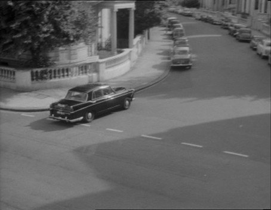
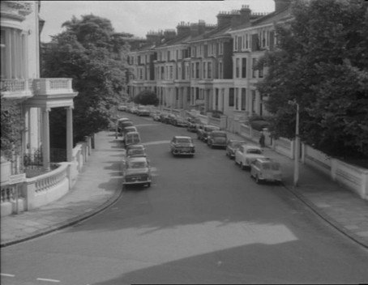

|
|
HELP FIND THE FOLLOWING LOCATIONS
PAGE 97GIDEON’S WAY: The Tin God (John Gilling: June/July 1964)
Randolph Crescent W9 - Police units are summoned to converge on Crosby Street.
Identified by ‘Controller,’ 2012


Unknown - Hiding in 45 Priory Street, Birmingham, Benny Benson and Freddy Tisdale wait for the couple in the opposite house to go to sleep so they can steal their car.

Think you know a spot? Need a bigger image? Email me.
< Previous | Index | Avengerland | Next >
Copyright © 2003 Anthony R. McKay